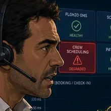

You are the new reliability team for a global airline platform¶
Aetherion AirOps is a fictional, Tier 0 airline operations platform running on Microsoft Azure. It is the digital backbone of a global carrier's day-to-day flying: it runs flight operations and dispatch, crew scheduling, passenger booking and check-in, baggage tracking, aircraft telemetry ingestion, and the airport and operational dashboards that controllers watch during every shift.
The platform is Tier 0 because when it degrades, aircraft do not move on time. A slow check-in service strands passengers at the gate. A crew-scheduling outage stops duty managers from confirming who is legal to fly. A dark flight board removes the operational picture an entire operations center depends on. The impact is measured in delayed departures, missed connections, stranded baggage, service-level breaches, and reputational damage.
Today you join Aetherion AirOps as its new Site Reliability Engineering team. You will run a shift inside the Global Operations Center, take a series of real incidents as they unfold, and use Azure SRE Agent to investigate, recommend and recover — with you deciding what it is allowed to do, and when. The guardrails are the same ones a real airline would insist on.
This is an operational and business platform built for learning. It is not safety-of-flight avionics and it does not control real aircraft. Every fault in this MicroHack is deliberately injected and fictional.
Who you'll be working with¶
You share the Operations Center with four others. You meet them as the day brings them in — you don't need to remember them now.
-
Sam Rivera · Reliability engineer
This is you. Your first week in Aetherion's Global Operations Center, walking into a shift that will not stay quiet. Every operational decision today is yours to make.
-
Aria · Azure SRE Agent
Your AI teammate for the shift. The hologram beside you in every scene is the Azure SRE Agent. Treat it like a new SRE joining the team: in Challenge 1 you onboard it, scope what it can see, and decide what it is allowed to do.
-
Elena Vasquez · Operations director
Answers for the airline. Wants incidents resolved safely, with a human in the loop, and expects them explained in business terms afterwards.
-

Marco Bianchi · Crew duty manager
Runs the crew desk. When crew scheduling degrades, Marco cannot verify which crew are rested, qualified and legal to fly — and aircraft do not depart without that answer.
-
Priya Nair · FinOps analyst
Watches what the platform and the agent cost. Autonomy only counts as a win if it improves outcomes without turning into runaway spend.
That spread is deliberate. Whether an agent earns a place in production is never just an operator's call — it is decided by execution, governance, business continuity and cost together. You will hear from all four today.
The shift ahead: challenge map¶
Read down the list and you are also reading the agent's arc: it starts read-only and supervised, earns your runbooks, gets specialised, and only then is trusted to act on its own — still inside limits you set.
| # | Challenge | What you practice |
|---|---|---|
| 1 | Onboard the Agent and Establish the Baseline | Environment discovery, connect the agent read-only, capture a baseline + a daily proactive health check |
| 2 | Detect and Investigate Without Touching Production | Detect a symptom, then read-only telemetry/log correlation and a defensible hypothesis |
| 3 | Controlled Recovery and Change Correlation | Human-approved remediation, then correlate a second incident with recent change and roll back |
| 4 | Give the Agent Aetherion's Operational Knowledge | Ground the agent so it follows your runbooks |
| 5 | Engineer the Agent: Specialist Subagent + Skill | Create a custom specialist subagent and encode a repeatable recovery as a skill |
| 6 | Autonomous Recovery and Cost-Aware Governance | Let the agent fix a bounded incident on its own, then run it cost-consciously |
| 7 | Final Incident: Restore Global Check-In Before Peak Departure | End-to-end multi-fault response as incident commander |
| 8 | Boarding Resumes: Brief Airline Leadership | Incident summary and leadership handover |
How the day works¶
The challenges form one continuous storyline, not a set of unrelated tutorials. Each challenge begins where the last one ended: the baseline you capture early is the evidence you compare against later; the permissions you reason about become the approvals you rely on; the knowledge you load changes the advice the agent gives; the specialist agent and skill you build are the tools you reach for in the final incident.
Challenges unlock linearly: you finish one before the next opens. You drive each challenge yourself with two commands:
./scripts/start-challenge.ps1 <N> # opens the incident for challenge N (root cause hidden)
./scripts/check-challenge.ps1 <N> # validates the required end state and unlocks challenge N+1
start-challenge.ps1injects the incident (or sets up a configuration exercise) without telling you the root cause. That is your job to find.check-challenge.ps1verifies the real end state against the live cluster and API Management, then unlocks the next challenge. A symptom-only or "wait it out" fix will not pass. The underlying fault must genuinely be cleared.
Work from evidence. Each challenge gives you the scenario, the business stakes, the signals you can inspect, the guardrails, and progressive hints, which is enough to investigate and solve it yourself. Start read-only, use the least privilege that gets the job done, and let write actions go through approval unless a challenge explicitly enables bounded automation. Verify recovery with telemetry after every change, and preserve the evidence you will need for the incident summary at the end of the shift.
Use the agent to do the work; use kubectl to check the agent. You have a
terminal, and some of these incidents would be faster to fix by hand. Resist it.
The point of the day is to find out where an agent earns its place and where it
doesn't, and you learn nothing about that by racing it. Where a challenge does ask
you to run something directly, it is to verify a claim the agent made — auditing an
agent through the agent tells you nothing.
Challenges 2 and 3 are one ongoing incident: detection and read-only investigation, then controlled recovery, before a change-driven flight-board outage is layered on top in Challenge 3.
Your shift starts now
The board is green, Aria is waiting, and nothing is on fire yet. Go and find out what healthy looks like before something isn't.